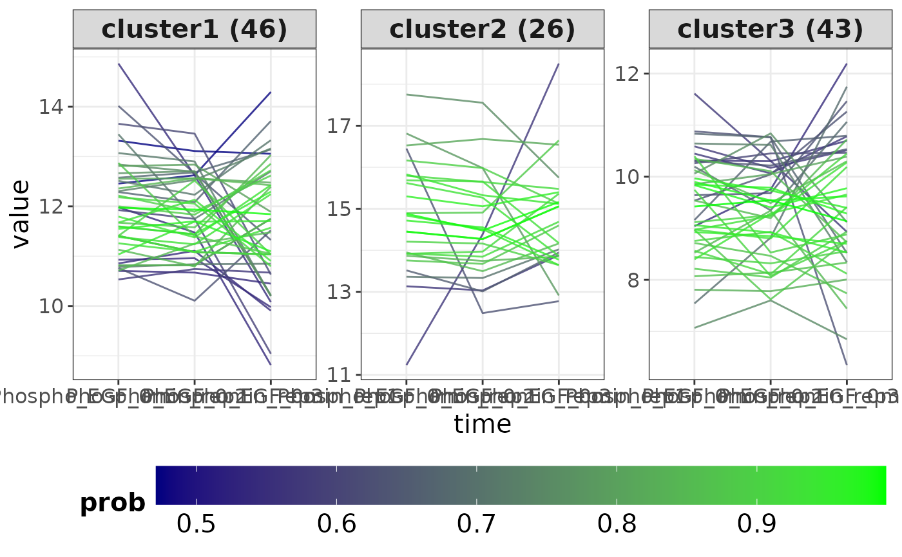

clusterTS performs clustering on time-series data and generates plots
for visualization.
Arguments
- x
A numeric
matrixwith rows as features and columns as time points.- k
A
numericvalue specifying the number of clusters. Default is 5.- pCut
A
numericvalue specifying the probability cutoff for cluster membership. Default isNULL.- twoCondition
A
logicalvalue indicating if the data contains two conditions. Default isFALSE.
Value
A list containing:
- cluster
A
tibblewith clustering information for each feature.- plot
A
ggplot2object for visualizing the clustering results.
Details
The function performs the following steps:
Sets a seed for reproducibility.
Removes rows with missing values.
Performs clustering using fuzzy C-means.
Filters clusters based on the probability cutoff if provided.
Generates plots for visualizing clustering results.
Examples
library(SummarizedExperiment)
# Load multiAssayExperiment object
data("dia_example")
# Get SummarizedExperiment object
se <- dia_example[["Phosphoproteome"]]
colData(se) <- colData(dia_example)
seProcess <- preprocessPhos(seData = se, normalize = TRUE, impute = "QRILC")
#> Imputing along margin 2 (samples/columns).
result <- addZeroTime(seProcess, condition = "treatment", treat = "EGF",
zeroTreat = "1stCrtl", timeRange = c("20min","40min", "6h"))
# Get the numeric matrix
exprMat <- assay(result)
# Call the function
clusterTS(x = exprMat, k = 3)
#> $cluster
#> # A tibble: 345 × 7
#> feature time value cluster prob cNum clusterNum
#> <fct> <fct> <dbl> <chr> <dbl> <int> <chr>
#> 1 s198 Phospho_EGF_0min_rep2 13.3 cluster1 0.472 46 cluster1 (46)
#> 2 s198 Phospho_EGF_0min_rep3 13.1 cluster1 0.472 46 cluster1 (46)
#> 3 s198 Phospho_EGF_0min_rep1 13.1 cluster1 0.472 46 cluster1 (46)
#> 4 s337 Phospho_EGF_0min_rep2 12.5 cluster1 0.475 46 cluster1 (46)
#> 5 s337 Phospho_EGF_0min_rep3 12.6 cluster1 0.475 46 cluster1 (46)
#> 6 s337 Phospho_EGF_0min_rep1 14.3 cluster1 0.475 46 cluster1 (46)
#> 7 s9 Phospho_EGF_0min_rep2 10.7 cluster1 0.539 46 cluster1 (46)
#> 8 s9 Phospho_EGF_0min_rep3 10.7 cluster1 0.539 46 cluster1 (46)
#> 9 s9 Phospho_EGF_0min_rep1 10.4 cluster1 0.539 46 cluster1 (46)
#> 10 s204 Phospho_EGF_0min_rep2 12.0 cluster1 0.539 46 cluster1 (46)
#> # ℹ 335 more rows
#>
#> $plot

#>